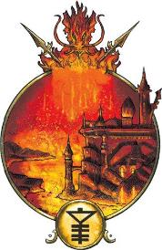
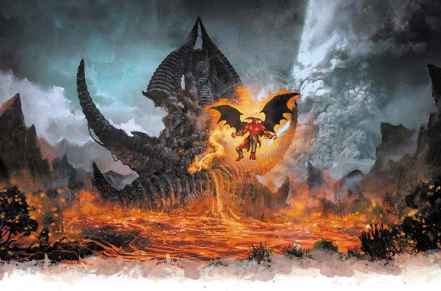

一片巨大的玄武岩从浩瀚的熔岩之海中升起。一座城堡横亘在它的顶端——那是一座闪闪发光的黄铜堡垒。熔岩瀑布从尖塔的边缘滚落而下。一群红龙腾空而起，绕着城堡盘旋，它们同步喷出烈焰，创造出一副令人目眩的奇景。欢迎来到至高熔炉，派对即将开始。
简而言之，费尼亚体现了“火”的概念。这个位面上满是熔岩和烈焰，从巨大的火山到永远在烈火吞噬边缘的城市。但费尼亚并非只是平凡的火，拉玛尼亚是单纯的、自然的火焰的来源，其上有火山和火元素存在。而费尼亚则代表我们在烈火中所看到的一切，一切火焰所代表的思想。它的部分位层表现了狂野的毁灭之力，在那里，苍翠的森林永远在燃烧。它也融合了工业，这里无数的火矮人们在烈焰和锻炉中永远劳作。它还反映了狂野的激情、无法抑制的情感和壮绝的长眠，这里是火巨灵的国度，他们是烈焰之海的领主，永远都在努力超越自己的对手。
火焰吸引了大部分人的注意，但这里同样有着熔岩，同样有着大地。火矮人们站在大地和火焰之间，开采矿石，喂给他们永不饕足的熔炉。在深深的洞穴中，土巨灵们打磨着珠宝，欣赏着他们自己的秘藏。即使在这些地下位层，空气也会灼伤那些缺乏适当保护的生物的肺部，但对于敢于直面烈焰的冒险者们来说，在火与石的殿堂里将会有奇迹和财富等着他们的到来。
费尼亚的高热对于未经保护的生物来说是致命的，它甚至能够烧毁凡人的新陈代谢能力。以下特性适用于一整个位面。
致命高温Deadly Heat。费尼亚的所有区域都适用于极度炎热环境（见《地下城主指南》第五章）。在一些尤其炎热的区域中，没有保护的生物每分钟必须进行体制豁免，而不是每小时进行。此外，所有生物都获得冷冻抗性，通常具有冷冻抗性的生物的生物变为免疫冷冻伤害。
增强火焰Empowered Flame。当一个生物施展一个1环及以上造成火焰伤害的法术时，它视作施展了比原本法术位高一环的法术。
工艺之火Fires of Industry。当使用费尼亚之火替代凡火时，生物在使用工具（如使用厨师工具烘焙，或者使用铁匠工具锻造）进行的属性检定中具有优势。
爆燃Burning Brigh。当一个生物进行死亡豁免时，它必须进行一次额外豁免，并保留两次结果。此外，当一个生物获得1级力竭时，它会获得一级额外力竭，当去除一级力竭时，也会额外去除一级力竭等级。在费尼亚，无论你是活着还是死去，都会飞快地发生。
标准时间Standard Time。费尼亚的时间流逝和物质位面的相同，并且在其各个位层中也是一致的。在凡俗眼中，瑟瑞奥特看起来比奇斯瑞更加混乱。然而，瑟瑞奥特并不是由混沌的概念所定义的；更准确地说，是凡俗不能理解指导其变化的逻辑。此外，奇斯瑞的持续变化还都是自然的：火焰和闪电，石头和水。但在瑟瑞奥特，龙卷风可能是由墨水组成的。沙尘暴中的每一粒沙子可能都是安黛尔女王奥萝拉的微型半身像，或者是一颗小小的跳动的心脏。这不是单纯的混乱，而是非自然。
费尼亚是天界生物和邪魔的家园，这些精魂体现了火焰的关键概念。但它的主要居民是土和火的元素生物。费尼亚没有原生的凡人或者显能生物：元素生物的数量被刻进了石头里，当一个元素死去时，一个新的元素便出现，取而代之。这可以有许多形式：新的魔蝠从火焰中喷出，土巨灵用青铜制造出新的火矮人。但总体而言，它的人口是稳定的。当一位火巨灵让两个火蜥蜴军团在一场盛大的表演中互相对抗时，他们知道火蜥蜴总是会重获新生。
火巨灵是费尼亚的天空中最闪亮的星辰。他们是贵族，居住在庞大的宅邸和城堡中，有无数仆人伺候，被惊人的奢华景象环绕。火焰消耗一切，而火巨灵是炫耀性消耗的大师。他们热情奔放，喜怒无常。他们任性而残忍，即使是在庆祝的时候也会消耗或摧毁他人的生命。然而，火巨灵并非征服者，因为他们已经有了他们可能想要的一切，他们的元素侍从们生来为他们服务，而对火巨灵来说，他们能够随手丢弃。
自时间之始，火巨灵们一直在互相竞争。激烈的争斗可能会演变成戏剧性的决斗，而有时候，两个对手会在一场火焰与燃烧的鲜血的盛大演出中释放军队。但总的来说，两方的冲突还是止于社会性，双方都努力超越自己的对手。火巨灵的社会受到精心制定的历法约束，在费尼亚的每一刻，都有一个火巨灵在举办盛大的庆祝。有时候，这些盛会会有一个主题或诠释——比如揭幕一件新的艺术品，或者一件旧的艺术品史诗般的燃烧，或者一位火巨灵最近一次重生的一千年纪念日。其他时候，这些聚会不需要任何解释。
如果一个火巨灵没有在举办一场盛会，那他就会在策划下一场，并且总是寻找着超越以往的一切盛会的方法。通常，他们会和位面内的资源合作，比如催动火矮人和土巨灵创造新的奇迹。但火巨灵有巨大的财力和穿越位面的能力，能够让他们来到物质位面。如果庆典中有一群表演同步喷火的红龙飞过，请记住，红龙并非费尼亚的原生物种，这个位面上也没有显能生物。因此，火巨灵是从另一个位面雇来了这群龙。想象一下，要做什么才能说服阿贡尼森的巨龙们来表演节目助兴！火巨灵们很少有和冒险者们打交道的理由，但如果角色们确实有什么可以提供的——或者足够有趣，能被邀请来参加宴会。那么火巨灵就会为他们花费时间。火巨灵们也可以充当邪术师的宗主——通常是邪魔契约——来给予凡人力量，但他们总会在寻找能够在无休止的社交争斗中胜过对手的东西。
虽然火巨灵们可以提供许多东西，但任何和一位火巨灵的联系都是危险的。他们会遵守在签订合同时写下的任何条款，但冒险者最好明智地确保合同里有安全条款。毕竟，火巨灵是烈焰的精魂，他们会燃烧一切接触的东西。除了自己的地位和娱乐之外，他们什么都不在乎，也不会为摧毁生命稍作犹豫。
在费尼亚有许多火巨灵贵族。这里是一些最著名的火巨灵，包括他们在凡人之中使用的公开头衔——他们的火族语头衔则要长的多。
至高熔炉的阿扎拉苏丹Sultan Azhalar of High Hearth立于社会序位的顶端。他组建了最庞大的军队，陶醉于军事力量的展示，其中也包括异域的战争机器。他的盛会通常包括角斗比赛或大型战争游戏。
火焰瀑布的莎什拉卡帕夏Pasha Shashraqa of Firefall在社会序位中仅次于阿扎拉，并决心击败自己的这位对手。她自认为是一位艺术鉴赏家，可能会对艺术家冒险者的作品产生兴趣。
闪金灰烬的拉卡什塔帕夏Pasha Raqashtar of Gold Ash是最见多识广的火巨灵。他在西拉尼亚的无限集市中有许多朋友，还喜欢就萨法拉斯的战役结果打赌。他对赌博的兴趣可能会将冒险者置于他的影响之下，因为他可能会与另一位不朽者就一次冒险的结果打赌——然后试图在天平上放上一根燃烧的手指。
火巨灵们的诸多财富从何而来？谁修筑了尊贵的黄铜之城？土巨灵是这些问题的答案。火矮人们维持着锻炉熊熊燃烧，但是土巨灵从原始的大地中摘下神奇的宝石和纯净的精金，也是他们创造出了最伟大和非凡的奇迹。每一位土巨灵都有一个特点，一种独特的艺术风格和技艺。虽然他们能够打造出每一位凡人奇械师都垂涎欲滴的神器，但他们的技术无法轻易复制。他们的作品中有魔导科学的要素，但他们的大部分作品援用了费尼亚本身的精粹，定居在物质位面的土巨灵能做的要更加有限。
土巨灵比炽烈的火巨灵要更加坚忍，不会举办奢侈的派对。他们仍然在进行激烈的社会竞争，努力创造出最辉煌的作品。这并不意味着他们的作品是最具威力的，相反，他们的竞争是关于创造出最需要的东西。土巨灵不需要黄金，所以火巨灵和他们的交易通常以易物的方式进行，这就形成了一个奇怪的二级市场。拉卡什塔可能会提供一队优秀的火蜥蜴战士以换取一顶绝妙的王冠，土巨灵用不上这些火蜥蜴，但他知道火巨灵阿扎尔正在募集士兵，所以…
冒险者们可能会因为土巨灵能够制造的作品而寻找他们，但土巨灵也可以是有趣的赞助人。一位土巨灵可能会需要一些职能在物质位面得到的稀有物质来完成最新的作品，所以他会求助于冒险者们帮他获得。或者一位土巨灵可能会将一队凡人当做调研组，来为自己最新的工作征求意见。
这里有一些值得注意的土巨灵：
娜迦·灰烬Naja Ash精于雕琢烈焰，创造出了大师级的神器或能够引导或生出火焰的工具。她创造了大部分火矮人，也能创造出其他元素生物、构装体，或者这两个概念之间的独特融合生物。她是多元宇宙中最重要的元素束缚大师，但要说服她和凡人分享自己的知识还需要花许多力气。
萨尔·塞伦Sar Saeren创造战争工具，从个人用的护甲和武器到宏伟的攻城器械。火巨灵阿扎拉是他最大的客户，但所有火巨灵都看重他无与伦比的作品。他花费了无数纪元时光试图造出最完美的剑，并经常在物质位面上寻找传说中的宝剑，有时他会把找到的剑保存下来，有时只研究几分钟，而有时则会直接摧毁。
黄铜Brass是土巨灵中最好的建筑师，创造了火巨灵最宏伟的宫殿。她总是对不同寻常的建筑感兴趣，还拜访过几次萨恩，研究那里的塔楼。她还以雕塑而闻名，从迷你的塑像到高耸入云的巨像，还有的可以从前者一样的小雕像转化为更大的东西，比如异能塑像。
费尼亚是原始火元素和土元素的家园（虽然他们也能在拉玛尼亚找到），它吸引着那些希望燃烧或堆积的精魂。这些元素生物由纯粹的本能驱动，大多数时候被火巨灵和土巨灵所无视。元素是费尼亚最常见的居民，一位火巨灵不会是一个没有臣民可供支配的领主，而那些次级元素则起到了这个作用。虽然它们具备人形，但它们是极度怪异的不朽精魂，由构成自己的元素塑造，被独特的目的而驱动。火矮人为锻炉而生，而魔蝠这以恶作剧为乐。大部分次级元素只要有机会能追求自己的目标便会感到满足，但偶尔，一个次要元素会发展处意外的怪癖，促使它去追寻新的目标。
这些元素的数量有限，因此它们的服务对火巨灵或土巨灵来说是有价值的。火巨灵和土巨灵常常交换他们元素臣民的服务，把他们送给蒙头或者敌对的宫廷。一般来说，这对元素并不要紧，但也有一些火蜥蜴反抗新的领主或魔蝠捉弄它们的新同伴的案例。
火矮人、魔蝠和火蜥蜴都是最常见的元素生物，但其他元素也可能在这个位面的一些地方遇到。
火矮人Azer。土巨灵用黄铜制造了火矮人，并使用费尼亚的原初活化为他们灌注生命。他们是永不疲劳的工人，热爱火和金属的工作。土巨灵也许创造出了最伟大的奇迹，但火矮人们的工作十分出色——而且要多得多。火矮人们天生就是天才的匠人，能够被分配到任何涉及火焰的工作之中。然而，没有什么比一位火矮人被分配去烤面包而不是冶炼黄铜更悲惨的了。
魔蝠Mephits。当在野外遭遇它们时，魔蝠是反复无常的恶作剧大师，它们的“恶作剧”通常会让位面旅行者们倒大霉。而那些为火巨灵服务的魔蝠通常会显得更加彬彬有礼——但当它们有机会恶作剧时，这副面孔会很快发生变化。
火蜥蜴Salamanders。火蜥蜴是火巨灵的主要仆从，它们能够充当士兵或执行家务。每有一位手持华丽长矛的火蜥蜴军官，就有一个手持黄铜托盘的火蜥蜴管家。火蜥蜴非常骄傲，在它们的行列中，常常有关于等级和地位之间的巨大竞争。大多数火蜥蜴对凡人不屑一顾，但它们可能会嫉妒那些受到过多关注或青睐的冒险者。

费尼亚的邪魔和天界生物是对火焰特定方面的概念的体现。火是他们外表的组成部分，他们可能有炽热的眼睛、橙红色的皮肤，或由火焰形成的翅膀和光环。
天使Angel代表火焰提供的抚慰：它给予生命的温暖、阻挡阴影的光芒。费尼亚的天使通常是梵天神使或其他低等的天使，它们通常会尽其所能地帮助和抚慰旅行者。
恶魔Demon反映了火焰可怕的破坏力，无法控制的野火和焚烧屋宅的火花。它们狂野而暴力，当冒险者遇到它们时，很少会有好的结果。恶魔渴望燃烧一切美妙的物件。有时，这会导致它们盯上火巨灵的宏伟宅邸，但在其他时间里，它们也会影响物质位面中无人问津的火焰，或者偶尔会用火焰操控凡人。常见的恶魔包括夸塞魔（魔蝠的暴力对应版本）、长着燃烧羽翼的弗洛魔和可怕的巴洛炎魔。
魔鬼Devil展现的是那些将火焰用作武器或激发恐惧的用法——比如酷刑中燃烧的烙铁，燃烧的战场上垂死者的哭号。恶魔十分罕见，并且格外残忍。他们在费尼亚创造出痛苦和折磨，并在物质位面诱骗凡人纵火或施加火刑。像恶魔一样，它们通常只在位面相接是影响人类，但偶尔一个费尼亚蘑菇会设法溜进艾伯伦。小魔鬼、猬魔和深狱炼魔都可以在费尼亚找到。
费尼亚被叫做烈焰之海的广阔位层占据。在可以看见天空的地方，头顶几乎总是被灰烬和烟雾所遮蔽。较小的位层体现了特定的概念，比如炼狱或篝火。它们通常可以通过烈焰之海的岛屿上的燃烧圆环或者地下厅堂中的隧道抵达。
烈焰之海The Sea of Fire
这片岩浆之海看上去似乎无穷无尽，比艾伯伦的任意一片海洋都要广阔。最终，烈焰之海会环绕起来，和自己相接。从至高熔炉往北，你会再次找到它，只是可能需要一个月的旅行。海中有岛屿、有玄武岩的尖塔和台地，其中有些有生物居住，但许多都荒芜而空旷。
火蜥蜴们乘坐黑钢的船只在熊熊燃烧的大海中航行，而火矮人们则乘坐黄铜编织的气球从上方飞过。许多岛屿上都有不灭明焰绘出的传送法阵，上面用火族语刻出的单词表示其目的地。任何熟练奥秘技能的施法者都能消耗一个3环或更高的法术位来激活传送法阵，但除非会火族语，否则无法知道它通往何方。这里有几个值得注意的目的地。
黄铜之城The City of Brass。黄铜之城是费尼亚唯一的大都市，一座属于火巨灵的充满奇迹的美丽城市。这里，一座高耸的火巨灵雕像手持着一个飞艇大小的不灭明焰气体。这尊雕像会改变自己的外貌，与目前统治这一社会的火巨灵外貌相符。这尊雕像和它所描绘的火巨灵都被称作“苏丹”。目前，现任苏丹是至高熔炉的阿扎拉。所有的火巨灵都在黄铜之城有自己的宅邸，但在任何时候，他们中的许多人都居住在自己的岛屿私人领地上。同样，也有一些土巨灵住在这里，展示他们的最新创作并承接新的委托。街道上满是火蜥蜴和魔蝠。来访的凡人值得好奇，但大多数元素生物都太忙了，无暇顾及他们。黄铜之城周围环绕着传送法阵，将它与所有的火巨灵领地和主要的锻造厂联结在一起。
火巨灵领地Efreeti Estates。每一位尊贵的火巨灵都有一座宏伟的宫殿或宅邸坐落在烈焰之海的岛屿上。尽管不如黄铜之城宏伟，这些领地也都极尽奢华，里面满是土巨灵创造的奇物和金属与烈焰的雕塑。
铸造厂Foundry。铸造岛屿是工业的典范。有的专注于实质的工业，巨大的齿轮和轮盘在其中缓慢转动，链条升起落下。另一些则反映了魔导工业，那里有耀眼的符文和闪闪发光的能量场。在这里，火矮人们每时每刻都在劳作，为火巨灵和他们的仆人们生产寻常、军用和魔法的物品。
地下厅堂Deep Halls。在铸造厂下方，隧道向下延伸到火海之下的地底。这些是土巨灵们的领域。如同上面的铸造厂一样，每一座都有独特的风格，与居住在那里的土巨灵情感上息息相关。熔岩之河、火焰池以及金属和矿物的矿脉贯穿厅堂。虽然不如火巨灵领地的豪华，但这些厅堂中常常展示了土巨灵在自己家中的奇妙创造。冒险者们可能会找到一个墙壁上装饰着一千把剑的厅堂，或者一座满是狡猾的构装鸣禽的黄铜花园。但有些土巨灵可能十分偏执，厅堂中也可能有大量强大而致命的陷阱。
炼狱Infernos
炼狱是孤立的位层，展示了火焰的特定破坏行为。一座炼狱是一座燃烧的都市，魔鬼狂轰滥炸，而恶魔四处舞蹈，在其中肆意纵火。而在另一个位层，一个孤独的巴洛炎魔俯瞰着古老的森林被焚烧殆尽。这些烈火永远不会熄灭，位层的一部分会再生，而其他的会被烧尽，而炼狱就这样永生不息。
篝火Campfire
这些小位层反映了火焰能带来的舒适。一处篝火位层可以是字面意义上的篝火，是一处在最为黑暗的荒野中发出的孤独光芒。而另一处篝火位层是一家名为“最初炉火”的客栈，在那里，天使老板阿烬为壁炉边的客人提供热饮——这家客栈便是因这座壁炉而得名。篝火位层是安全的避难所，也是旅行者休憩的理想场所。
以下是费尼亚影响物质位面的一些方式。
和费尼亚有关的显能区域通常具有位面的一个或多个通用特性。那些有致命高温特性的的显能区域通常有不寻常的火山或地壳活动，一般会被避开。然而，卡尼斯家族一直在寻找具有“工业之火”特性的费尼亚显能区域，除了在工具检定上提供优势之外，它们还能让奇械师们制造出其他地区无法复制的附魔（特别是与塑能和火焰相关的附魔）。在极地，费尼亚的显能区域可以作为意想不到的避风港，或者提供不同寻常的地热效应。在坎纳斯，冰顶山附近的炉灰镇就以其宜人的气候和地热温泉闻名。
当费尼亚相接时，气温会极剧上升，原本温暖而安全的区域可能会变得极度炎热，具有致命高温特性、增强火焰和爆燃特性。在此期间，罕见的情况下，被困在异常强烈的火焰里的生物可能会意外地被送到瑞费尼亚。
当费尼亚远离时，高温会失去它的力量。生物在对抗高温效应的豁免掷骰和对抗造成火焰伤害的法术豁免掷骰中具有优势。
通常来说，瑞西亚每五年就会有一整个拉维翁月的相接。而在五年之间，相接两年半之后，它会在一整个札兰提尔月都远离艾伯伦。
土巨灵和费尼亚铸造厂创造了大量的奇物。他们的许多作品都是小饰品，比如真的能够喷出火焰的黄金模型龙。其他的这更厉害一些，比如异能塑像。虽然许多费尼亚的神器火焰有关——比如火球模组、焰舌剑——但并不局限于火焰和塑能。费尼亚的物品通常由黄铜、黑曜石或玄武岩制作，但土巨灵可以加工所有的金属。
来自费尼亚等等另外两只资源是冷火和费尼亚灰。冷火是一种不灭明焰，能够在费尼亚自然产生，它的火焰有着温暖的油灰般的质感。费尼亚灰是又仅在火海生长的稀有树木烧成。费尼亚灰是塑能学派相关魔法物品的强力组成部分。此外，如施法者在施展一个一环或更高的造成火焰伤害的法术时洒下一撮费尼亚灰，他们造成火焰伤害法术会视作比原本消耗的法术位高一环。虽然并非所有树木都能产生费尼亚灰，但冷火和费尼亚灰偶尔也能从费尼亚显能区域获得。
费尼亚难以到达，且十分危险，但这里有一些点子可能会作为冒险者们和费尼亚相关的冒险的灵感。
要命的派对The Life of the Party。火焰瀑布的莎什拉卡帕夏决心在下一场晚会中压过阿扎拉苏丹的风头。现在什么玩意儿最流行？当然是冒险者了。帕夏将冒险者们带到了费尼亚，承诺如果他们让晚会成功，就会好好奖励他们——而如果失败，就会把他们丢进烈焰之海。角色们能够在一个火巨灵和土巨灵的聚会上脱颖而出吗？他们知道该用那把叉子吗，尤其是在其中一把还熊熊燃烧的时候？当一位阿扎拉苏丹的火蜥蜴将军向一位队员挑战时，会发生什么？
炼狱机器The Inferno Machine。冒险者们偶然发现了一个翡翠利爪的营地。这些寻者们正在与土巨灵萨尔·塞伦合作，后者正在为他们制作一个能够夷平一座城市的毁灭性爆炸装置。冒险者们能够找出为什么赛伦要和翡翠离职合作吗？如果土巨灵是被迫的，他们能释放他吗？如果这是交易的一部分，他们是否能提出更好的报价？如果最终这枚炸弹被做了出来，他们又会怎么做？
后门The Back Door。冒险者们发现了一把奇怪的黄铜钥匙。当它插入一扇门后，会把这扇门变为通往费尼亚的一座酒馆，“最初炉火”的传送门。这把钥匙属于谁？它的能量多久能够使用一次？老板阿烬总是很高兴看到新的蛮快，但他们还会在这间酒馆里遇到谁呢？